본 화면은 메인 3D 뷰 (초기 화면) 기능과 관련된 동작 및 상태를 표시합니다. 주요 기능으로 [3D 서버실 전경, 카메라 조작(회전/줌/패닝), 방향키 이동,
전체보기 버튼 위치] 등을 포함하고 있습니다.
마커 드래그 이동 / 리사이징 (박스 우측 하단) / 삭제
(우클릭)
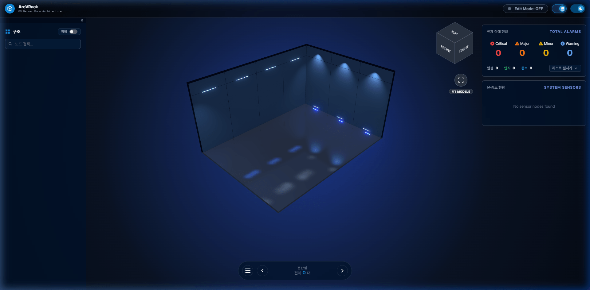
UI 요소 설명
13D 서버실 뷰어3D Canvas
바닥·벽면이 렌더링된 메인 3D 공간. 마우스 드래그로 회전/패닝, 스크롤로 줌, 방향키로 카메라
이동 가능.
2전체보기 버튼Button
우측 카메라 큐브 아래 위치. 클릭 시 씬 내 모든 오브젝트가 화면에 최적 비율로 자동 맞춤됨.
3Edit Mode / 테마 토글Switch
우측 상단 툴바. Edit Mode ON/OFF 스위치로 수정 모드 진입, Light/Dark
토글로 테마 즉시 전환.
1-2 계층 구조 트리 (Hierarchy Tree)
화면 설명
본 화면은 계층 구조 트리 (Hierarchy Tree) 기능과 관련된 동작 및 상태를 표시합니다. 주요 기능으로 [좌측 사이드바 트리 구조, 노드 유형별 아이콘, 노드
클릭 시 씬 전환] 등을 포함하고 있습니다.
마커 드래그 이동 / 리사이징 (박스 우측 하단) / 삭제
(우클릭)
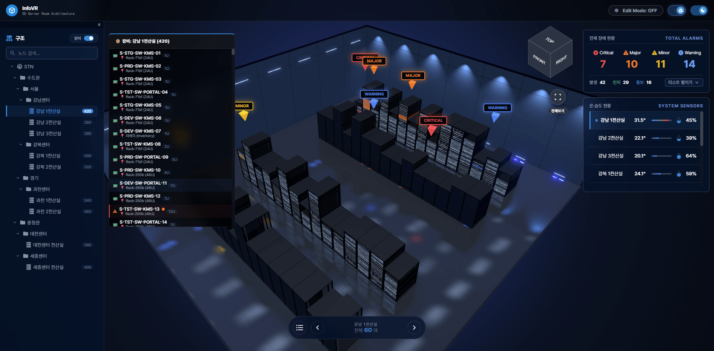
UI 요소 설명
1좌측 사이드바 (계층 트리)Panel
지역 → 센터 → 전산실 등 계층 구조를 트리로 제공. 최상단 root부터 하위 zone까지 5가지 노드 유형 지원.
2노드 유형 아이콘Badge
트리 각 항목에 유형별(root/group/site/room/zone) 고유 아이콘이 표시되어 시각적 구분 제공.
3노드 검색Input / Form
트리 상단 검색창에서 노드 이름을 검색하여 대규모 인프라에서도 원하는 구역을 빠르게 탐색.
4노드 클릭 → 씬 전환Interaction
트리에서 노드를 클릭하면 해당 구역으로 3D 씬(카메라 시점)이 즉시 전환됨.
5장비 리스트Panel
트리에서 장비 토글을 클릭하면 해당 노드의 장비 리스트 표출.
1-3 랙 자동 포커싱 & 캐러셀
화면 설명
본 화면은 랙 자동 포커싱 & 캐러셀 기능과 관련된 동작 및 상태를 표시합니다. 주요 기능으로 [랙 클릭 → 카메라 이동 애니메이션, 하단 Focus Carousel
UI, 캐러셀 내 랙 항목 구성] 등을 포함하고 있습니다.
마커 드래그 이동 / 리사이징 (박스 우측 하단) / 삭제
(우클릭)
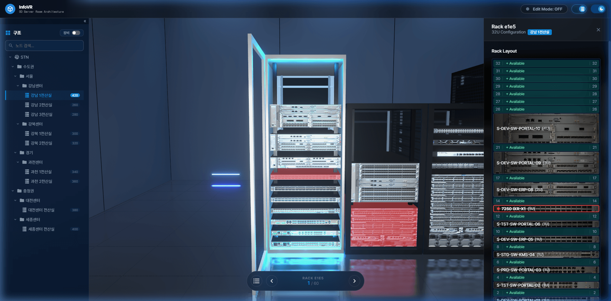
UI 요소 설명
13D 랙 모델 군집3D Object
배치된 랙들이 3D로 렌더링. 개별 랙 클릭 시 카메라가 부드럽게 해당 랙 정면으로 자동 이동(포커싱)됨.
2Focus CarouselNavigation
하단 중앙의 랙 탐색 컨트롤. 전체 랙 개수·현재 순번 표시, 좌우 화살표로 순차 랙 포커싱 가능.
3랙 포커스 라이팅3D Effect
선택 랙 주변의 조명(PointLight) 강도가 증가하고 주변은 어두워져 선택 랙에 시각적 집중 제공.
1-4 에러 상태 대시보드 위젯
화면 설명
본 화면은 에러 상태 대시보드 위젯 기능과 관련된 동작 및 상태를 표시합니다. 주요 기능으로 [우측 Error Summary 4개
카드(Critical/Major/Minor/Warning), 카드 클릭 → Drill-down 테이블, 에러 항목 클릭 → 장비 포커싱] 등을 포함하고 있습니다.
마커 드래그 이동 / 리사이징 (박스 우측 하단) / 삭제
(우클릭)
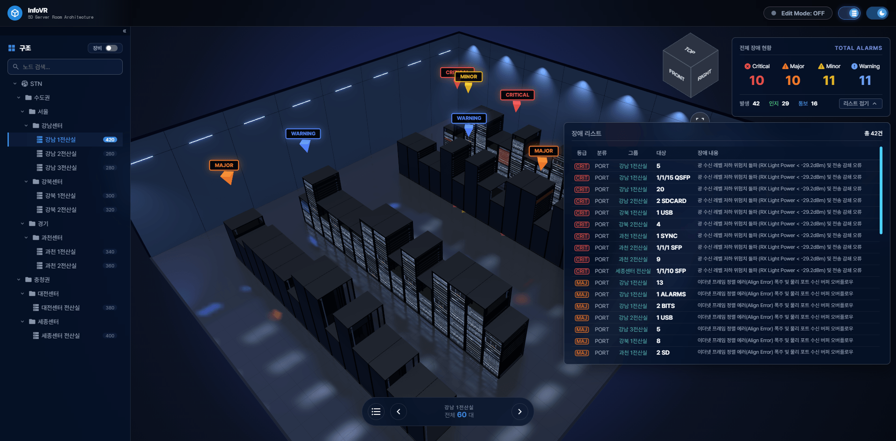
UI 요소 설명
1에러 요약 카드 (4종)Panel
Critical(빨강)·Major(주황)·Minor(노랑)·Warning(파랑) 등급별 에러
건수 카드. 클릭 시 Drill-down 테이블 오픈.
2Drill-down 테이블List
선택한 등급의 에러 항목을 목록으로 표시. 장비명, 포트, 에러 유형 등 상세 정보 포함.
3에러 항목 클릭 → 포커싱Interaction
테이블의 에러 항목 클릭 시 해당 장비 랙으로 카메라가 이동하고 장비 모달이 에러 포트를 하이라이트한 상태로 열림.
4크로스-노드 자동 전환Interaction
에러 장비가 현재 노드가 아닌 다른 노드 소속일 경우, 해당 노드로 자동 전환 후 포커싱.
1-5 환경 센서 모니터링 위젯
화면 설명
본 화면은 환경 센서 모니터링 위젯 기능과 관련된 동작 및 상태를 표시합니다. 주요 기능으로 [온도/습도 위젯 UI, 게이지 바 색상 단계, 물방울 아이콘, 노드 행
클릭] 등을 포함하고 있습니다.
마커 드래그 이동 / 리사이징 (박스 우측 하단) / 삭제
(우클릭)
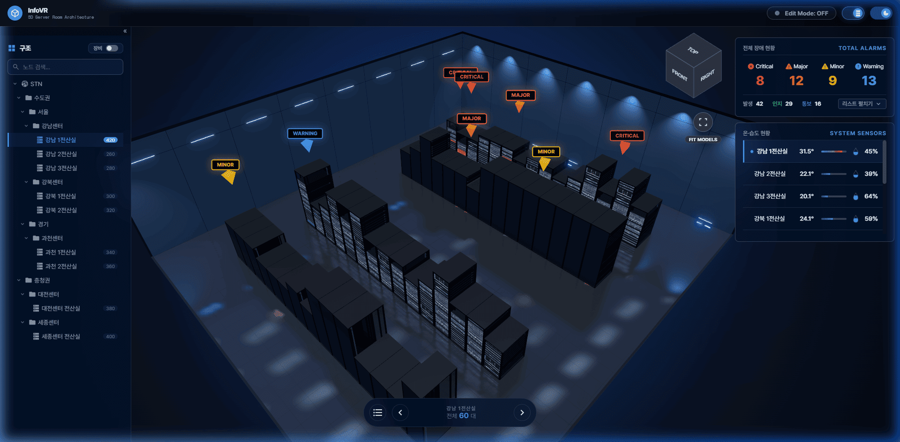
UI 요소 설명
1온도 게이지 바Panel
노드별 온도를 15°C~35°C 범위로 정규화. 27°C 이상 주황, 31°C 이상 빨강
그라디언트로 위험도 직관 표시.
2습도 물방울 아이콘Panel
노드별 습도(%)를 물방울 아이콘의 채움 레벨로 시각화.
3노드 행 클릭 전환Interaction
위젯의 노드 행을 클릭하면 해당 노드로 3D 씬이 즉시 전환됨.
1-6 랙 정보 패널 (Device Panel)
화면 설명
본 화면은 랙 정보 패널 (Device Panel) 기능과 관련된 동작 및 상태를 표시합니다. 주요 기능으로 [우측 패널 레이아웃, 랙 이름/U 용량, 슬롯별 장비
타일, 빈 슬롯 표시, 장비 클릭 동작] 등을 포함하고 있습니다.
마커 드래그 이동 / 리사이징 (박스 우측 하단) / 삭제
(우클릭)
UI 요소 설명
1랙 정보 헤더Header
랙 이름, U 용량(예: 32U), 소속 노드 뱃지 등 랙의 기본 정보 표시.
2장비 슬롯 타일 리스트List
랙 내 전체 슬롯을 U 단위로 나열. 장비가 장착된 슬롯은 SVG 썸네일과 모델명 표시, 빈 슬롯은 Available
표시.
3장비 클릭 → 상세 모달Interaction
장착된 장비 타일 클릭 시 장비 상세 모달(Device Modal)이 열려 스펙·포트 현황 조회 가능.
4수정 모드 드래그 배치Interaction
Edit Mode에서는 장비 타일을 드래그하여 슬롯 간 재배치하거나, 등록 장비를 드래그하여 빈 슬롯에 장착 가능.
1-7 장비 상세 모달 (Device Modal)
화면 설명
본 화면은 장비 상세 모달 (Device Modal) 기능과 관련된 동작 및 상태를 표시합니다. 주요 기능으로 [장비 스펙 정보(IP/MAC/모델명 등), SVG
프리뷰, 포트 상태 툴팁, 에러 포트 마커, 양면 표시, 기본 표시 면 라벨] 등을 포함하고 있습니다.
마커 드래그 이동 / 리사이징 (박스 우측 하단) / 삭제
(우클릭)
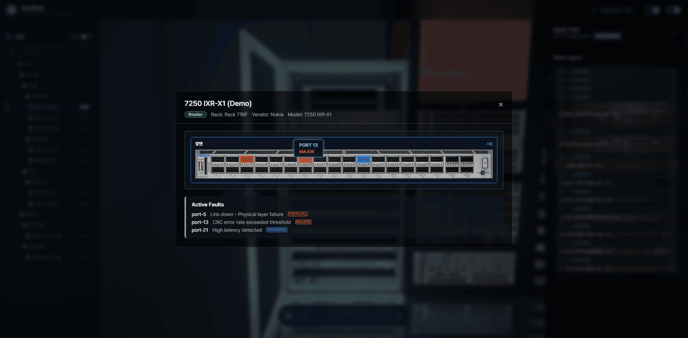
UI 요소 설명
1장비 스펙 헤더Header
장비명, 유형 뱃지(Router/Switch/Server), 소속 랙, 제조사, 모델명, IP, MAC 주소 표기.
2SVG 시각화 영역Graphics
장비 전면부·후면부 외관 SVG 렌더링. 삽입된 카드 형상이 합성된 고해상도 프리뷰 제공.
3앞면/뒷면 & 기본 라벨Badge
양면 모델은 앞면·뒷면을 상하로 동시 표시. 기본 라벨로 텍스처·썸네일 기준 면 표시.
4포트 호버 툴팁Tooltip
SVG 포트 영역에 마우스 호버 시 포트 번호·이름·연결 상태가 툴팁으로 즉시 표시됨.
5에러 포트 색상 마커Floating UI
에러 포트 위치에 위험도별 색상 마커(빨강·주황·노랑·파랑) 오버레이. 문제 포트를 직관적으로 파악 가능.
1-8 다크/라이트 테마 전환
화면 설명
본 화면은 다크/라이트 테마 전환 기능과 관련된 동작 및 상태를 표시합니다. 주요 기능으로 [테마 토글 버튼 위치, 전환 전/후 3D 환경 변화] 등을 포함하고
있습니다.
마커 드래그 이동 / 리사이징 (박스 우측 하단) / 삭제
(우클릭)
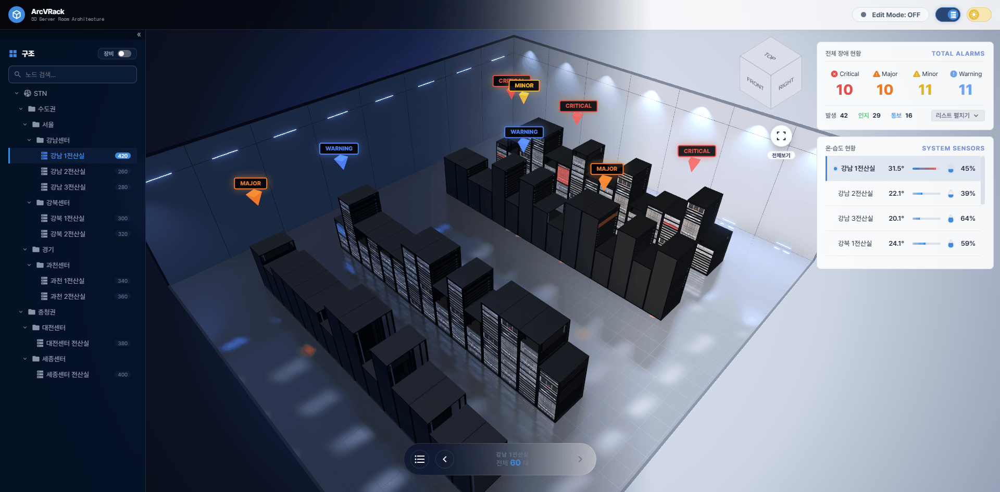
UI 요소 설명
1테마 토글 버튼Switch
좌측 상단의 Light/Dark 전환 토글. 클릭 즉시 UI 전체와 3D 환경이 동시에 테마 전환됨.
23D 환경 테마 연동3D Effect
다크 모드 시 야간 조명·어두운 배경, 라이트 모드 시 주간 조명·밝은 배경으로 가상공간이 실시간 전환됨.
2-1 수정 모드 진입 & 툴바
화면 설명
본 화면은 수정 모드 진입 & 툴바 기능과 관련된 동작 및 상태를 표시합니다. 주요 기능으로 [Edit Mode 토글 위치, 상단 툴바 버튼 배치(Save,
Undo/Redo, Sample, Reset, 장비관리, 모델관리, 포트마법사), 사이드바 구성] 등을 포함하고 있습니다.
마커 드래그 이동 / 리사이징 (박스 우측 하단) / 삭제
(우클릭)
UI 요소 설명
1Edit Mode 토글Switch
상단 바의 ON/OFF 토글. 활성화 시 수정 모드에 진입하며 상단 툴바와 좌측 편집 패널이 표시됨.
2상단 툴바 버튼Button
Save, Undo/Redo, Sample,
Reset, 장비관리, 모델관리, 포트마법사 등 주요 액션 버튼 배치.
3좌측 편집 사이드바Sidebar
계층 트리, 가상공간 설정, Scene Objects 리스트 등 편집 도구가 탭/아코디언으로 구성됨.
4접이식 사이드바Panel
사이드바를 아이콘 뷰로 최소화(Fold) 가능. 접힌 상태에서 아이콘 클릭 시 플로팅 패널이
오버레이됨.
2-2 가상공간 설정
화면 설명
본 화면은 가상공간 설정 기능과 관련된 동작 및 상태를 표시합니다. 주요 기능으로 [우측 '가상공간' 패널, W/D 입력, 3D공간 제작
버튼, 와이어프레임 가이드 라인] 등을 포함하고 있습니다.
마커 드래그 이동 / 리사이징 (박스 우측 하단) / 삭제
(우클릭)
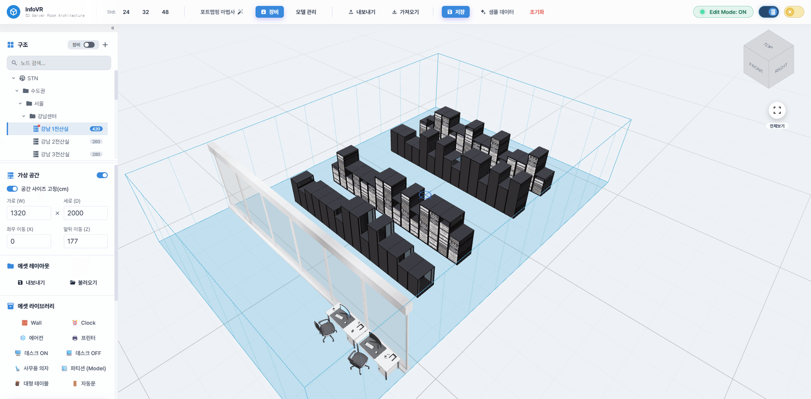
UI 요소 설명
1가상공간 설정 패널Panel
공간의 가로(W)·세로(D) 사이즈를 수치 입력. 값 변경 후 공간이 실시간 렌더링 반영.
23D공간 제작 버튼Button
설정된 사이즈로 바닥·벽면 가상공간을 즉시 생성. 기존 공간이 있으면 크기 갱신.
3와이어프레임 가이드 라인3D Effect
편집 모드 시 공간 크기를 직관적으로 파악할 수 있는 하늘색 와이어프레임 박스가 바닥·둘레에 렌더링됨.
2-3 오브젝트 배치 & 기즈모 조작
화면 설명
본 화면은 오브젝트 배치 & 기즈모 조작 기능과 관련된 동작 및 상태를 표시합니다. 주요 기능으로 [기본 제공
모델(Wall/Partition/Chair/Desk/Clock/Light) 목록, 기즈모(이동/회전/크기) 조작, 잠금/해제 토글] 등을 포함하고 있습니다.
마커 드래그 이동 / 리사이징 (박스 우측 하단) / 삭제
(우클릭)
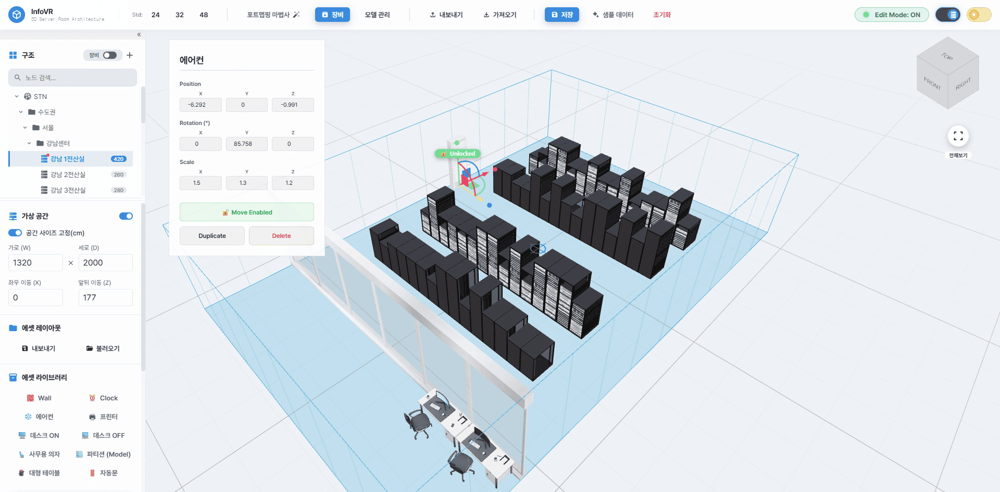
UI 요소 설명
1기본 제공 모델 목록List
Wall, Partition, Chair,
Desk, Clock, Light 등 6종 기본 3D 집기 모델을 선택하여 씬에 배치 가능.
2기즈모 조작 (이동/회전/크기)Interaction
선택된 오브젝트에 Translate/Rotate/Scale 기즈모가 활성화. 마우스로 축을 잡아 정밀 조작.
3잠금/해제 토글 (🔒)Switch
각 모델의 잠금/해제 개별 토글. 잠금 시 기즈모 조작·드래그가 비활성화되어 실수 방지.
4모델 속성 편집 패널Panel
선택 모델의 위치(X/Y/Z), 회전, 크기 및 모델별 고유 파라미터(벽
색상, 조명 강도 등) 상세 편집.
2-4 커스텀 3D 모델 임포트
화면 설명
본 화면은 커스텀 3D 모델 임포트 기능과 관련된 동작 및 상태를 표시합니다. 주요 기능으로 [GLB/GLTF 파일 업로드(파일 선택 + 드래그 앤 드롭), 임포트된
모델 속성 편집 패널(위치/회전/크기), Scene Objects 리스트] 등을 포함하고 있습니다.
마커 드래그 이동 / 리사이징 (박스 우측 하단) / 삭제
(우클릭)
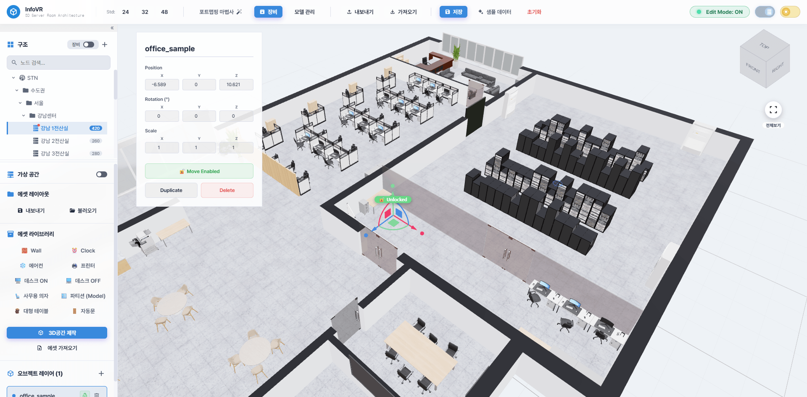
UI 요소 설명
1GLB/GLTF 업로드 영역Input / Form
사용자 보유 3D 모델 파일을 파일 선택 또는 드래그 앤 드롭으로 업로드. 업로드 즉시 씬에
렌더링됨.
2임포트 모델 속성 편집Panel
임포트된 모델의 위치(X/Y/Z), 회전(X/Y/Z), 크기(X/Y/Z)를
수치로 정밀 편집.
2-5 씬 오브젝트 관리 & 내보내기
화면 설명
본 화면은 씬 오브젝트 관리 & 내보내기 기능과 관련된 동작 및 상태를 표시합니다. 주요 기능으로 [Scene Objects 리스트(선택/잠금/삭제), 3D 모델
JSON 내보내기/불러오기] 등을 포함하고 있습니다.
마커 드래그 이동 / 리사이징 (박스 우측 하단) / 삭제
(우클릭)
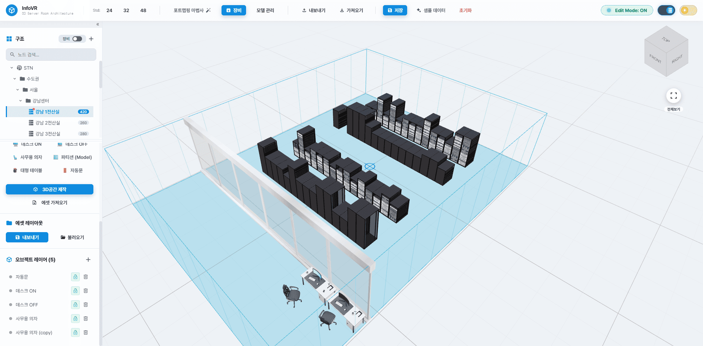
UI 요소 설명
1Scene Objects 목록List
배치된 모든 모델의 이름·유형 목록 표시. 항목별 선택,
잠금/해제(🔒), 삭제(🗑️) 관리.
23D 모델 Export 버튼Button
전체 3D 모델 데이터(위치, 회전, 크기, 바이너리 포함)를 JSON 파일로 내보내기.
33D 모델 Import 버튼Button
기존 JSON 파일을 불러와 3D 환경을 동일하게 복원.
2-6 랙 생성/삭제/설정
화면 설명
본 화면은 랙 생성/삭제/설정 기능과 관련된 동작 및 상태를 표시합니다. 주요 기능으로 [랙 생성 패널(24U/32U/48U, Std/Wide), 랙 방향
설정(0°/90°/180°/270°), 랙 이름 편집, 랙 삭제 확인] 등을 포함하고 있습니다.
마커 드래그 이동 / 리사이징 (박스 우측 하단) / 삭제
(우클릭)
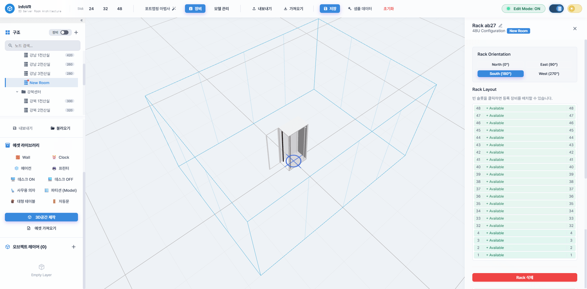
UI 요소 설명
1랙 생성 패널Panel
24U/32U/48U 크기를 선택하여 빈 랙을 씬에 추가.
2랙 방향 설정Panel
우측 패널에서 랙 정면 방향을 0°/90°/180°/270° 4방향 중 선택. 3D 씬에 즉시 반영.
3랙 이름 편집Input / Form
패널 상단의 랙 타이틀을 직접 클릭하여 인라인 편집. 변경 즉시 반영.
4랙 삭제 확인Modal
랙 삭제 시 확인 모달 표시. 장비가 배치된 랙은 경고 메시지와 함께 확인 요구.
5Undo/RedoShortcut
Ctrl+Z로 이전 상태 복원, Ctrl+Shift+Z로 다시 적용. 위치 변경·배치 이력 모두
지원.
2-7 랙 장비 배치 (Edit Mode)
화면 설명
본 화면은 랙 장비 배치 (Edit Mode) 기능과 관련된 동작 및 상태를 표시합니다. 주요 기능으로 [빈 슬롯 클릭 → 장비 추가 모달, 등록 장비
목록(정렬/필터), 장비 선택 → 슬롯 배치, 재배치(다른 랙 이동) 확인] 등을 포함하고 있습니다.
마커 드래그 이동 / 리사이징 (박스 우측 하단) / 삭제
(우클릭)
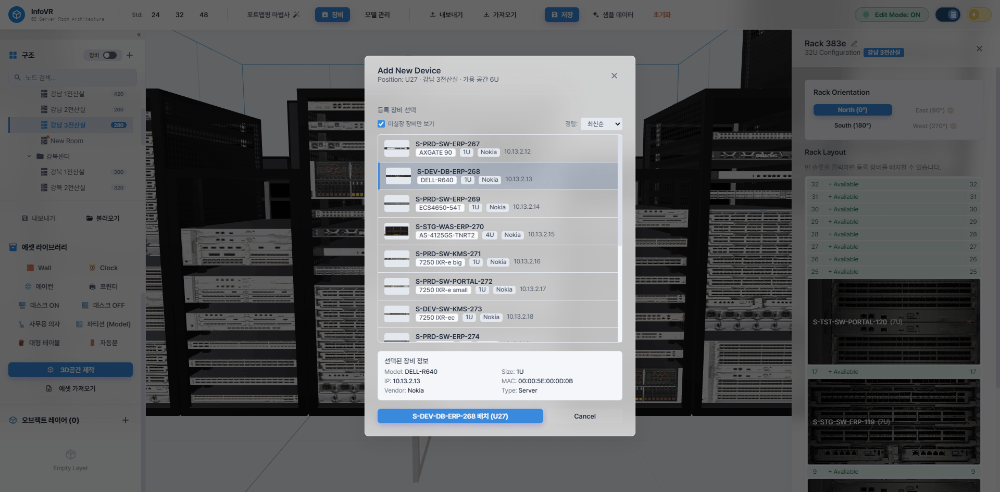
UI 요소 설명
1빈 슬롯 클릭 → 장비 추가Interaction
Edit Mode에서 빈 슬롯 클릭 시 장비 추가 모달이 열림. 등록 장비 목록에서 선택하여 배치.
2등록 장비 목록 (정렬/필터)List
모달 내 등록 장비를 이름·모델·유형별로 정렬·필터링하여 빠르게 탐색 가능.
3장비 선택 → 슬롯 배치Interaction
장비를 선택하면 지정 슬롯에 즉시 배치. U 크기에 따라 멀티 슬롯 점유 자동 처리.
4재배치 확인 모달Modal
이미 다른 랙에 배치된 장비를 이동할 경우 기존 위치에서 제거됨을 경고하고 확인 요구.
2-8 환경 내보내기/불러오기
화면 설명
본 화면은 환경 내보내기/불러오기 기능과 관련된 동작 및 상태를 표시합니다. 주요 기능으로 [전체 환경 엑셀 Export/Import, 파일 선택 UI] 등을 포함하고
있습니다.
마커 드래그 이동 / 리사이징 (박스 우측 하단) / 삭제
(우클릭)
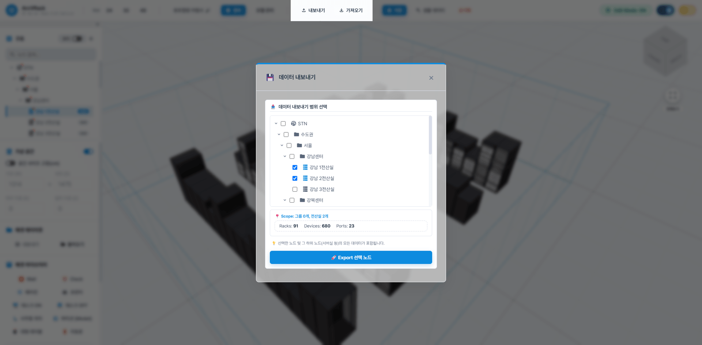
UI 요소 설명
1전체 환경 ExportButton
랙 위치, 장비 배치, 계층 노드 등 전체 인프라 데이터를 엑셀(.xlsx)로 한 번에 내보내기.
2전체 환경 ImportButton
백업된 엑셀 파일을 불러와 전체 인프라 환경을 동일하게 복원.
2-9 데이터 초기화 & 샘플
화면 설명
본 화면은 데이터 초기화 & 샘플 기능과 관련된 동작 및 상태를 표시합니다. 주요 기능으로 [초기화 버튼, 초기화 확인 모달, Sample 버튼, 초기화 보호 대상
설명] 등을 포함하고 있습니다.
마커 드래그 이동 / 리사이징 (박스 우측 하단) / 삭제
(우클릭)
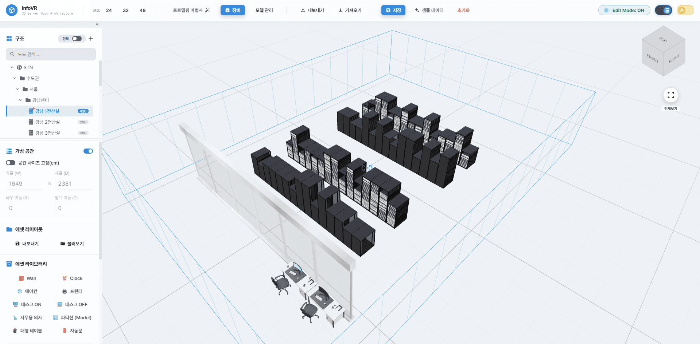
UI 요소 설명
1초기화 버튼 (Reset)Button
저장 데이터를 삭제하고 시스템을 초기 상태로 복원. 장비 모델 데이터(섀시·타입)는 보호되어 유지됨.
2초기화 확인 모달Modal
초기화 실행 전 되돌릴 수 없음을 경고하고 최종 확인 요구.
3Sample 버튼Button
미리 구성된 샘플 랙/장비/노드 데이터를 즉시 로드하여 시스템 시연용 환경 구성.
3-1 모달 전체 레이아웃
화면 설명
본 화면은 모달 전체 레이아웃 기능과 관련된 동작 및 상태를 표시합니다. 주요 기능으로 [좌측 계층 노드 트리 / 우측 장비 테이블, 검색/필터, 장비 추가 버튼] 등을
포함하고 있습니다.
마커 드래그 이동 / 리사이징 (박스 우측 하단) / 삭제
(우클릭)
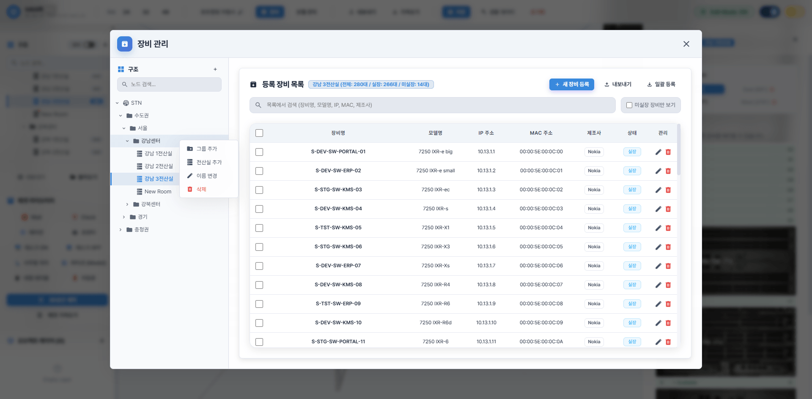
UI 요소 설명
1좌측 계층 노드 트리Panel
장비 소속 그룹·룸 등 계층 노드를 트리 형태로 표시. 노드 클릭 시 우측 장비 테이블이 해당 노드 장비로 필터링됨.
2우측 장비 테이블List
등록된 전체 장비를 테이블로 표시. 장비명, IP, MAC, 모델, 유형, 소속 노드 등 컬럼 포함.
3검색·필터 영역Input / Form
장비명·IP 등 키워드 검색과 유형·모델별 필터를 제공하여 대량 장비를 빠르게 탐색.
4장비 추가 버튼Button
모달 내 장비 등록 폼으로 이동. 새 장비의 기본 정보 입력 및 모델 선택 시작.
3-2 계층 노드 관리
화면 설명
본 화면은 계층 노드 관리 기능과 관련된 동작 및 상태를 표시합니다. 주요 기능으로 [노드 생성/수정/삭제 UI, 트리 구조 편집 인터랙션] 등을 포함하고 있습니다.
마커 드래그 이동 / 리사이징 (박스 우측 하단) / 삭제
(우클릭)
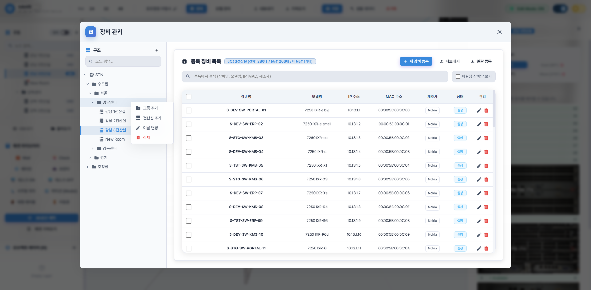
UI 요소 설명
1노드 생성 버튼Button
트리에 새 그룹/사이트/룸/존 노드를 추가. 부모 노드 하위에 즉시 생성됨.
2노드 이름 수정Input / Form
노드 항목을 더블클릭하여 이름을 인라인 편집. Enter로 확정.
3노드 삭제Button
노드 삭제 시 하위 장비·자식 노드 존재 여부를 확인하고 경고 표시.
3-3 장비 등록 폼
화면 설명
본 화면은 장비 등록 폼 기능과 관련된 동작 및 상태를 표시합니다. 주요 기능으로 [장비 기본 정보 입력(모델 선택, IP, MAC 등),등을 포함하고 있습니다.
마커 드래그 이동 / 리사이징 (박스 우측 하단) / 삭제
(우클릭)
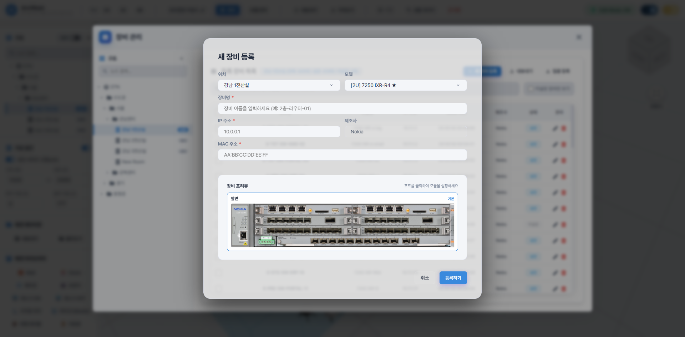
UI 요소 설명
1장비 기본 정보 입력 폼Input / Form
장비명, IP, MAC, 제조사, 유형(Switch/Router/Server) 등 기본 스펙 입력 필드.
2모델 선택 드롭다운Input / Form
등록된 장비 모델 목록에서 선택. 선택 시 SVG 프리뷰와 U 크기가 자동 반영됨.
3-4 장비 수정/삭제
화면 설명
본 화면은 장비 수정/삭제 기능과 관련된 동작 및 상태를 표시합니다. 주요 기능으로 [테이블 인라인 편집, 삭제 확인 모달(배치 경고)] 등을 포함하고 있습니다.
마커 드래그 이동 / 리사이징 (박스 우측 하단) / 삭제
(우클릭)
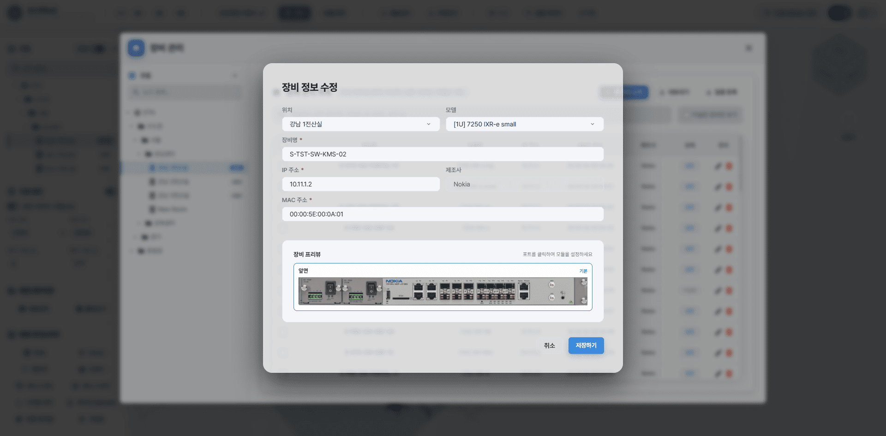
UI 요소 설명
1테이블 인라인 편집Input / Form
장비 테이블의 각 셀을 직접 클릭하여 IP, MAC, 이름 등을 즉시 수정.
2장비 삭제 (배치 경고)Modal
삭제 대상 장비가 특정 랙에 배치되어 있으면 해당 랙에서도 제거됨을 경고하고 확인 요구.
3-5 엑셀 Import/Export
화면 설명
본 화면은 엑셀 Import/Export 기능과 관련된 동작 및 상태를 표시합니다. 주요 기능으로 [Export 체크 선택 UI, Import 파일 업로드, 결과
피드백] 등을 포함하고 있습니다.
마커 드래그 이동 / 리사이징 (박스 우측 하단) / 삭제
(우클릭)
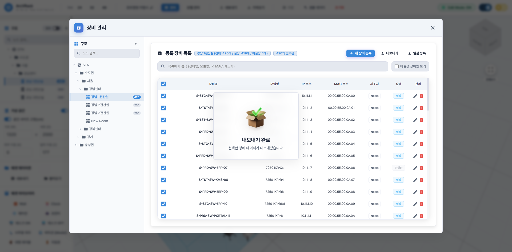
UI 요소 설명
1엑셀 Export 체크 선택Input / Form
내보낼 장비 항목을 개별 체크 또는 전체 선택하여 .xlsx 파일로 다운로드.
2엑셀 Import 업로드Input / Form
외부 엑셀 파일을 업로드하여 장비를 대량 일괄 등록. 중복·오류 항목은 결과 피드백으로 안내.
3Import 결과 피드백Panel
임포트 완료 후 성공 건수, 실패 건수, 오류 사유를 요약 표시.
4-1 등록된 모델 목록 (리스트 뷰)
화면 설명
본 화면은 등록된 모델 목록 (리스트 뷰) 기능과 관련된 동작 및 상태를 표시합니다. 주요 기능으로 [기본 장비 모델 리스트(18종), 커스텀 모델 리스트, 모델 타입
태그(고정형/섀시형), 수정됨 뱃지, 썸네일] 등을 포함하고 있습니다.
마커 드래그 이동 / 리사이징 (박스 우측 하단) / 삭제
(우클릭)
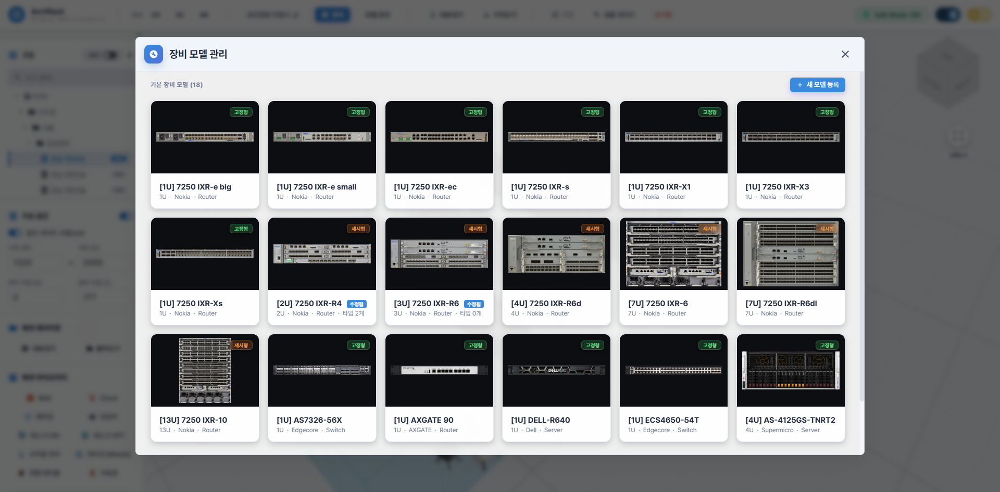
UI 요소 설명
1기본 장비 모델 리스트 (18종)List
시스템 내장 기본 모델 목록. 각 항목에 SVG 썸네일, 표시 이름, 모델 타입 태그(고정형/섀시형), 제조사 표시.
2커스텀 모델 리스트List
사용자 등록 모델 별도 섹션. 양면 모델은 양면 등록 여부와 기본 표시 면 정보 포함.
3모델 타입 태그Badge
각 모델에 고정형 또는 섀시형 태그 표시. 수정된 모델은 수정됨 뱃지
추가.
4수정 / 숨기기 버튼Button
✏️ 수정 버튼으로 모델 편집 폼 진입. 미수정 기본 모델은 숨기기 버튼으로 목록에서 제외 가능.
4-2 숨김/복구 기능
화면 설명
본 화면은 숨김/복구 기능 기능과 관련된 동작 및 상태를 표시합니다. 주요 기능으로 [기본 모델 숨기기 버튼, 숨김 처리된 기본 모델 섹션, 복구 버튼(🔄)] 등을
포함하고 있습니다.
마커 드래그 이동 / 리사이징 (박스 우측 하단) / 삭제
(우클릭)
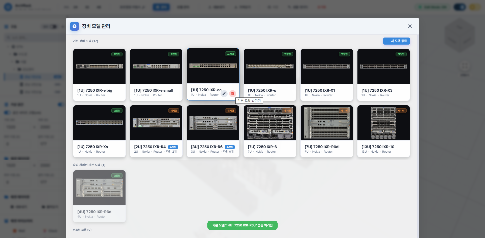
UI 요소 설명
1기본 모델 숨기기Button
사용하지 않는 기본 모델을 목록에서 숨김 처리. 숨긴 모델은 별도의 숨김 처리 섹션으로 이동.
2숨김 모델 섹션Panel
숨겨진 기본 모델 목록. 각 항목에 🔄 복구 버튼이 제공되어 언제든 원래 목록으로 복원 가능.
3수정 초기화Button
수정된 기본 모델의 커스텀 설정을 초기화하여 시스템 기본값으로 복원.
4-3 새 모델 등록 폼 — 기본 정보
화면 설명
본 화면은 새 모델 등록 폼 — 기본 정보 기능과 관련된 동작 및 상태를 표시합니다. 주요 기능으로 [모델명, Unit(U), 표시 이름 프리뷰, 모델 타입
선택(일반/카드 기반)] 등을 포함하고 있습니다.
마커 드래그 이동 / 리사이징 (박스 우측 하단) / 삭제
(우클릭)
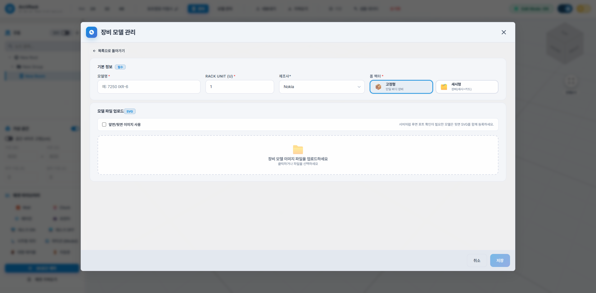
UI 요소 설명
1모델명 & Unit(U) 입력Input / Form
모델명(고유 이름)과 Rack Unit(1U~48U) 입력. 조합된 표시 이름([4U] 7250
IXR-6)이 실시간 프리뷰됨.
2모델 타입 선택Input / Form
일반(Normal): 단일 바디 장비, 카드 기반(Card-based): 카드 슬롯이 있는 모듈러
장비 중 선택.
3모델 SVG 업로드 & 프리뷰Input / Form
장비 외관 SVG 파일 업로드. 즉시 렌더링 프리뷰 제공, viewBox에서 크기(px) 자동 추출.
4앞면/뒷면 사용 체크Switch
양면 관리가 필요한 장비용. 활성화 시 후면 SVG 추가 업로드 필드와 기본 표시 면 선택 옵션 표시.
4-4 새 모델 등록 폼 — SVG 업로드
화면 설명
본 화면은 새 모델 등록 폼 — SVG 업로드 기능과 관련된 동작 및 상태를 표시합니다. 주요 기능으로 [모델 SVG 업로드/프리뷰, 앞면/뒷면 사용 체크, 기본 표시
면 선택, SVG 크기 자동 추출] 등을 포함하고 있습니다.
마커 드래그 이동 / 리사이징 (박스 우측 하단) / 삭제
(우클릭)
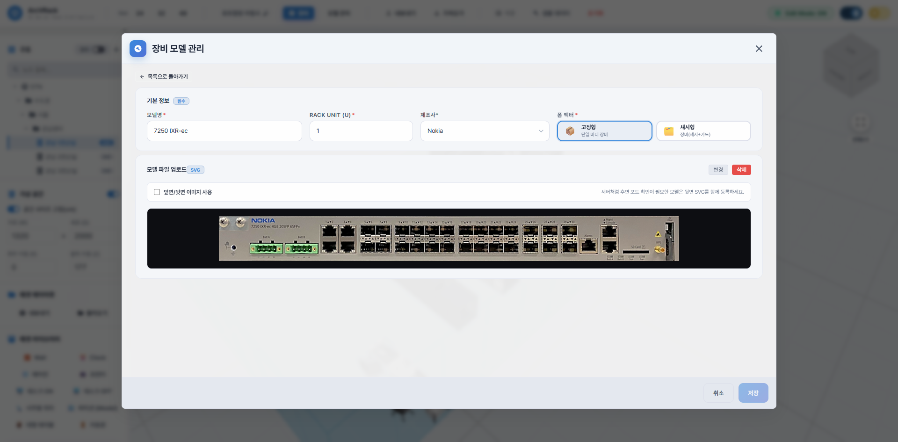
UI 요소 설명
1SVG 업로드 영역Input / Form
전면 SVG 파일 선택·드래그 업로드. 파일명과 원본 크기(width × height px) 자동 표시.
2SVG 프리뷰 렌더링Graphics
업로드 즉시 SVG가 실물 비율로 렌더링. 외관 확인 후 다음 단계 진행.
3기본 표시 면 선택Input / Form
양면 등록 시 앞면 또는 뒷면 중 랙 텍스처·썸네일 기준 면을 선택.
4-5 카드 기반 장비 — 섀시 설정
화면 설명
본 화면은 카드 기반 장비 — 섀시 설정 기능과 관련된 동작 및 상태를 표시합니다. 주요 기능으로 [인터랙티브 섀시 그리드 생성, 리사이징, 병합/나누기, 간격(Gap)
설정] 등을 포함하고 있습니다.
마커 드래그 이동 / 리사이징 (박스 우측 하단) / 삭제
(우클릭)
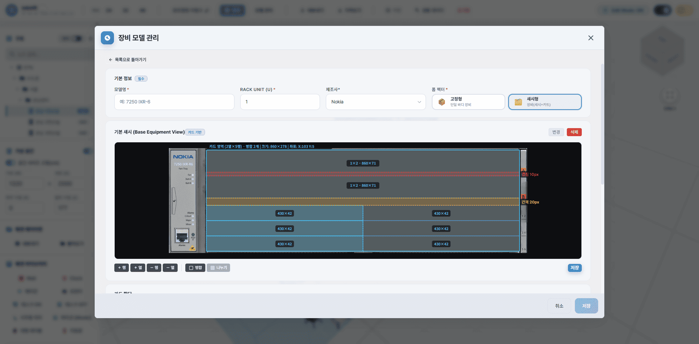
UI 요소 설명
1기본 섀시 SVG 업로드Input / Form
카드 미삽입 빈 장비 바디 SVG 업로드. 장비 조립 캔버스의 배경으로 사용됨.
2인터랙티브 카드 영역 드로잉Interaction
섀시 SVG 위에서 마우스 드래그로 사각형 영역을 그려 카드 삽입 바운딩 박스(X, Y, W, H) 설정.